Lecture 20: NGS Data Logistics
Learning Objectives
By the end of this lecture, you will be able to:
- Understand the most common NGS-related data types (FASTQ, SAM/BAM, VCF)
- Upload and organize sequencing data in Galaxy using collections
- Assess read quality with
fastpandMultiQC - Map reads to a reference genome with
BWA-MEM2 - Remove PCR duplicates and realign reads around indels
- Call variants in haploid systems using
LoFreq - Annotate variants with
SnpEffand extract results withSnpSift - Interpret variant tables to answer biological questions
Setup
This step is essential for a successful workshop. Please do this first and ask questions if anything does not work!
If you ALREADY have an account at https://usegalaxy.org skip to step 3.
- Create an account at https://usegalaxy.org
- Validate your account using a link that was emailed to you
- Log in
- Click on https://usegalaxy.org/join-training/bmmb554-26/
You should see the following screen:
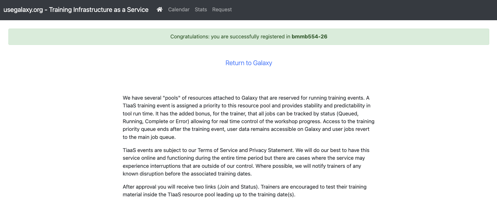
1. The Story
To make this tutorial realistic we use an example from the real world. We start with four sequencing datasets (FASTQ files) representing four individuals positive for malaria—a life-threatening disease caused by Plasmodium parasites transmitted to humans through the bites of infected female Anopheles mosquitoes.
Our goal: determine whether the malaria parasite (Plasmodium falciparum) infecting these individuals is resistant to Pyrimethamine—an antimalarial drug. Resistance is conferred by a mutation in the PF3D7_0417200 (dhfr) gene [1]. Given sequencing data from four individuals we will determine which ones carry mutations in this gene.
The analysis begins with FASTQ files representing four individuals sequenced using a paired-end protocol (each sample = two files: forward and reverse reads). We combine files into a Collection, map against the P. falciparum reference genome, call variants, annotate them, and produce a final table answering our question.
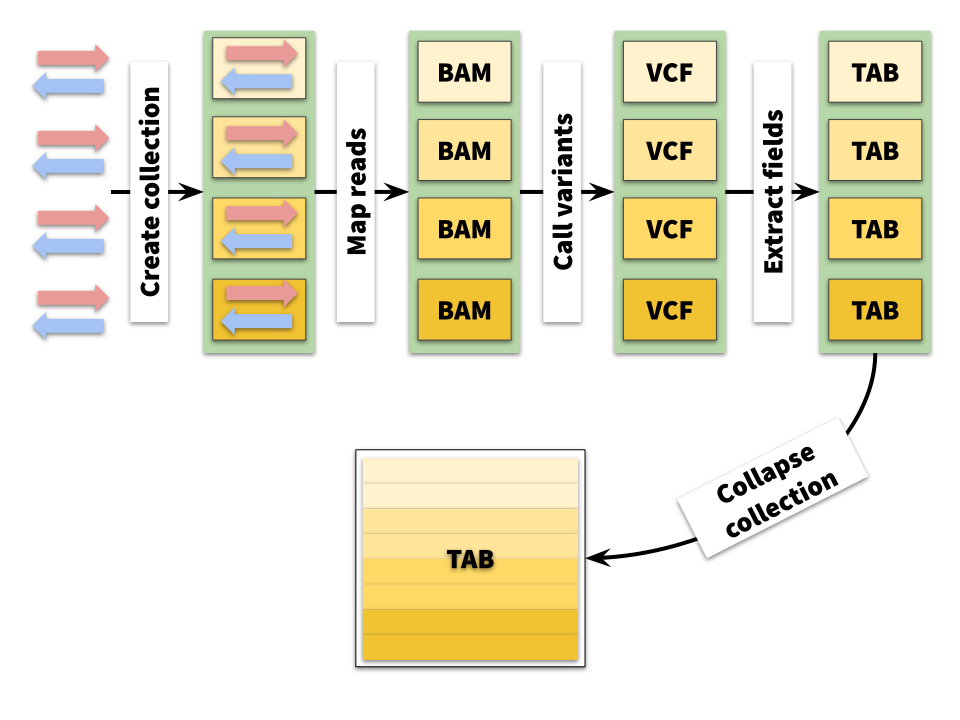
2. From Reads to Variants
We use data from four infected individuals sequenced within the MalariaGen effort:
| Accession | Location |
|---|---|
| ERR636434 | Ivory Coast |
| ERR636028 | Ivory Coast |
| ERR042232 | Colombia |
| ERR042228 | Colombia |
These accessions correspond to datasets stored in the Sequence Read Archive (SRA) at NCBI.
2.1 Upload data into Galaxy
For this tutorial the data has been down-sampled to ensure quick processing. The FASTQ datasets are deposited in a Zenodo library.
Upload accessions into Galaxy
- Go to your Galaxy instance (e.g., usegalaxy.org)
- Click the Upload Data button:
- In the dialog box click Paste/Fetch:
- Paste the following URLs into the box:
https://zenodo.org/records/15354240/files/ERR042228_F.fq.gz
https://zenodo.org/records/15354240/files/ERR042228_R.fq.gz
https://zenodo.org/records/15354240/files/ERR042232_F.fq.gz
https://zenodo.org/records/15354240/files/ERR042232_R.fq.gz
https://zenodo.org/records/15354240/files/ERR636028_F.fq.gz
https://zenodo.org/records/15354240/files/ERR636028_R.fq.gz
https://zenodo.org/records/15354240/files/ERR636434_F.fq.gz
https://zenodo.org/records/15354240/files/ERR636434_R.fq.gz- Change datatype to
fastqsanger.gz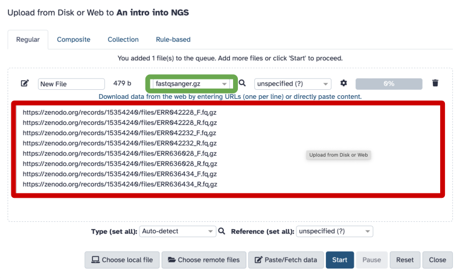
- Click Start, then Close
This creates eight datasets—each sample has forward and reverse read files (4 x 2 = 8):
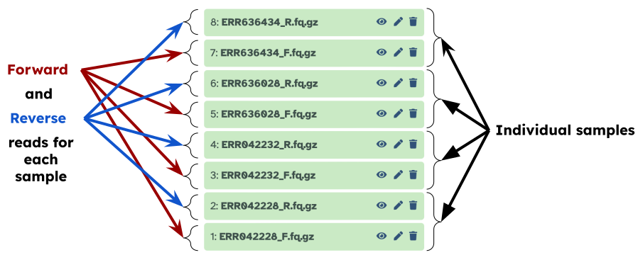
3. FASTQ Format
We covered FASTQ structure and quality score encoding in detail in Lecture 6. As a brief recap, FASTQ stores sequencing reads as four lines per record—header (@), sequence, +, and ASCII-encoded quality scores. The FASTQ Sanger version [2] is the accepted standard; Galaxy uses it exclusively.
3.1 Paired-end data
In paired-end sequencing, both ends of short DNA molecules (< 1 kb) are sequenced, producing two reads per fragment. Mate-pair sequencing is similar but targets the ends of long molecules joined by an internal adapter.
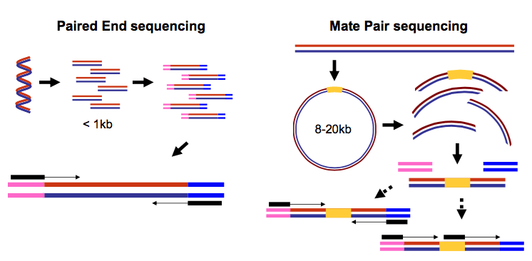
Paired-end data can be stored as:
- Two separate files — one for forward reads, one for reverse reads (read IDs must match in order)
- A single interleaved file — forward and reverse reads alternate
Two separate files:
File 1 (forward):
@M02286:19:000000000-AA549:1:1101:12677:1273 1:N:0:23
CCTACGGGTGGCAGCAGTGAGGAATATTGGTCAATGGACGGAAGTCT
+
ABC8C,:@F:CE8,B-,C,-6-9-C,CE9-CC--C-<-C++,,+;CEFile 2 (reverse):
@M02286:19:000000000-AA549:1:1101:12677:1273 2:N:0:23
CACTACCCGTGTATCTAATCCTGTTTGATACCCGCACCTTCGAGCTTA
+
--8A,CCE+,,;,<CC,,<CE@,CFD,,C,CFF+@+@CCEF,,,B+C,Read IDs must be identical in both files and listed in the same order. Some files append /1 and /2 tags to distinguish forward and reverse reads.
Interleaved file:
@1/1
AGGGATGTGTTAGGGTTAGGGTTAGGGTTAGGGTTAGGGTTAGGGTTA
+
EGGEGGGDFGEEEAEECGDEGGFEEGEFGBEEDDECFEFDD@CDD<ED
@1/2
CCTAACCCTAACCCTAACCCTAACCCTAACCCTAACCCTAACCCTAAC
+
GHHHDFDFGFGEGFBGEGGEGEGGGHGFGHFHFHHHHHHHEF?EFEFFIn this tutorial, paired-end data is provided as two separate files per sample.
3.2 Quality scores
Recall from Lecture 6 that each base carries a Phred quality score \(Q = -10 \cdot \log_{10}(p)\), where \(p\) is the error probability (Q20 = 99% accuracy, Q30 = 99.9%). These scores are encoded as ASCII characters, but different Illumina versions have used different encodings and offsets:
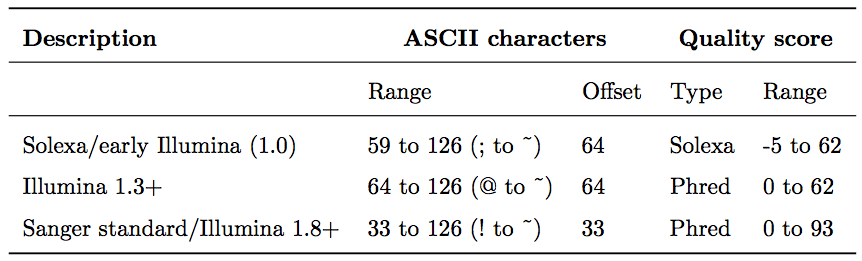
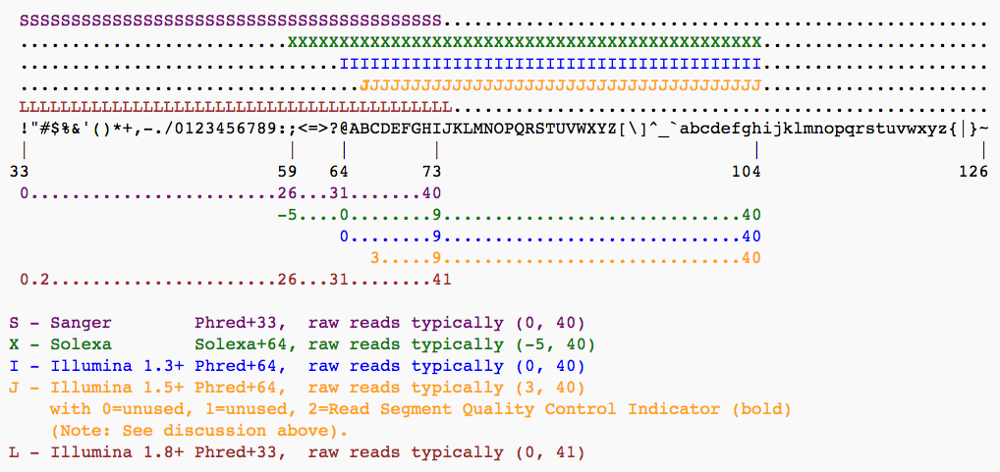
Starting with Illumina format 1.8, scores use the standard Sanger/Phred format.
3.3 Assessing quality with FastQC
One of the first steps in NGS analysis is assessing data quality. Several tools exist for this purpose:
- FastQC – the legacy standard, widely recognized but slow
- Falco – a fast, drop-in replacement for FastQC producing identical output
- fastp – combines QC reporting with adapter removal and quality filtering in a single pass; commonly used in the Galaxy ecosystem
In this lecture we use fastp downstream because it handles both QC and cleanup simultaneously but the plots below show FastQC output as an illustration.
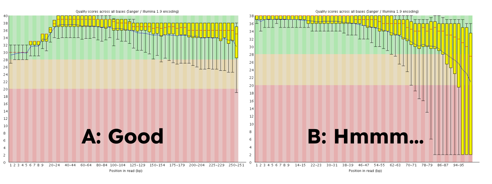
Dataset A has long reads (250 bp) with excellent quality (no scores below 30). Dataset B has lower quality with read ends dipping below 20—these reads may need trimming.
4. Bundle Data into a Collection
We want to perform the same analysis on all four samples. Rather than repeating operations eight times, we bundle datasets into a Collection. Collections in Galaxy are logical groupings that reflect semantic relationships between datasets.
We create a paired collection with two levels: the first level contains samples, the second contains forward and reverse reads for each sample.
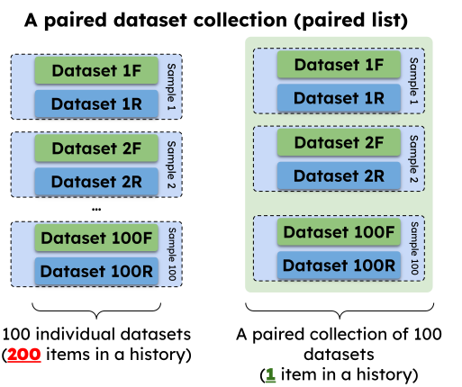
Create a paired collection
Follow the steps shown in this video (2 minutes). After creating the collection, click its name in the history panel to explore the contents.
5. Quality Control with fastp and MultiQC
Raw FASTQ data often contains adapter fragments from library preparation and low-quality reads. fastp automatically detects and removes common sequencing adapters and prunes low-quality segments.
Run fastp
Run fastp with the following parameters:
- Single-end or paired reads:
Paired collection - Select paired collection(s): the collection created in the previous step

fastp generates cleaned data plus HTML and JSON reports as three collections:
You can click individual HTML reports to inspect quality, but for many samples this becomes impractical. Instead, feed the JSON output from fastp into MultiQC to visualize QC data for all samples at once.
Run MultiQC on fastp JSON data
Run MultiQC with:
- Which tool was used to generate logs?:
fastp - Output of fastp: JSON output from the previous step
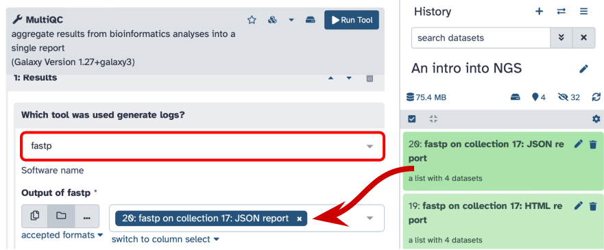
Click the eye icon on the “Webpage” output to see the QC report:

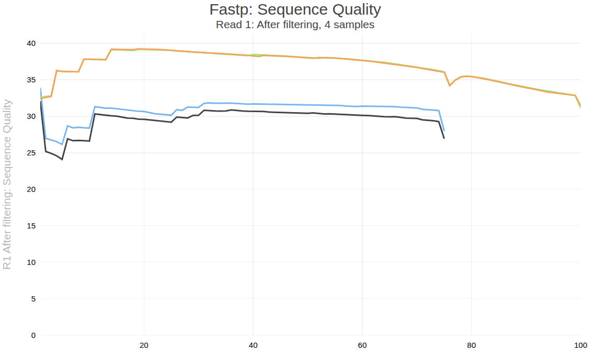
Two samples have very high quality values and 100 bp reads. The other two have somewhat lower (but acceptable) quality and shorter 80 bp reads.
6. Mapping Reads
Galaxy provides several mappers including bowtie, bwa-mem, and bwa-mem2. We use bwa-mem2—the latest version of this popular aligner.
6.1 Upload reference genome
When the genome index is not pre-installed on Galaxy, you need to upload the reference yourself. We use the 3D7 strain P. falciparum reference genome.
Upload the P. falciparum genome
Paste the following URL into the Upload tool and set datatype to fasta.gz:
https://zenodo.org/records/15354240/files/GCF_000002765.6.fa.gz
6.2 Map the reads
Map reads with BWA-MEM2
Run BWA-MEM2 with:
- Will you select a reference genome from your history or use a built-in index?:
Use a reference genome from history and build index if necessary - Use the following dataset as the reference: the uploaded reference genome
- Single or Paired-end reads:
Paired collection - Select a paired collection: the cleaned FASTQ collection from
fastp
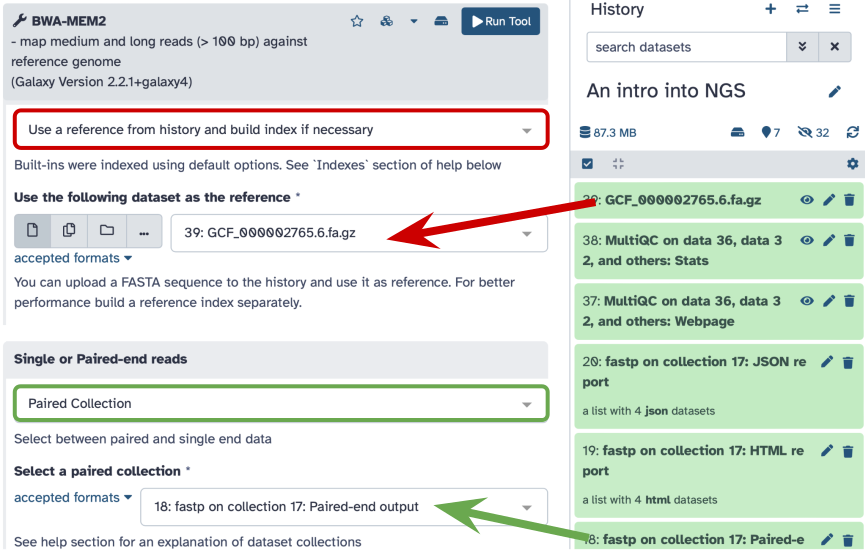
BWA-MEM2 produces four BAM outputs—one per sample.
6.3 SAM/BAM format
The SAM/BAM format is the accepted standard for storing aligned reads. SAM is human-readable and tab-delimited; BAM is its binary, indexed form optimized for fast random access. In Galaxy, BAM datasets are always indexed and sorted by coordinate.
SAM files contain a short header section and a long alignment section where each row represents one read alignment:
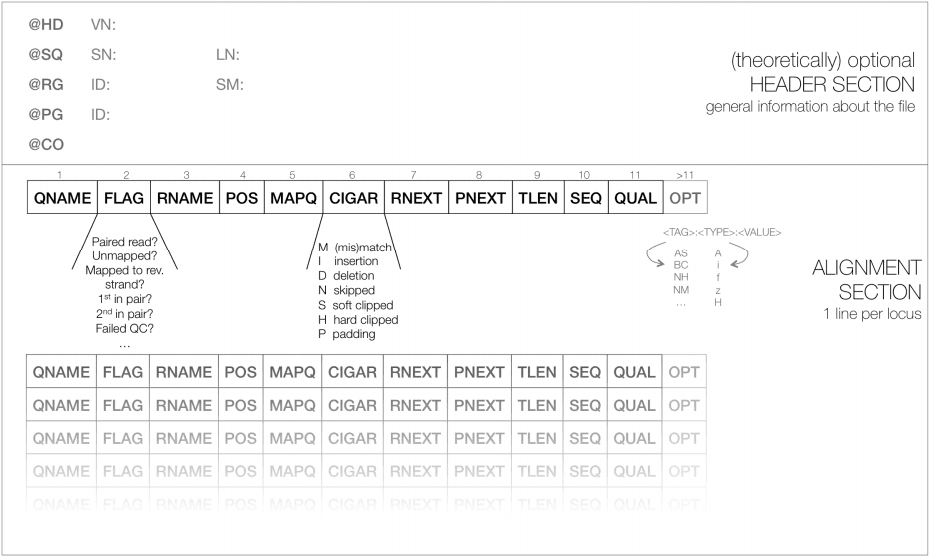
Each line in the header starts with @. For example, @SQ lines list reference sequence names (SN) and lengths (LN):
@SQ SN:chr1 LN:1000
@SQ SN:chr2 LN:1000
@SQ SN:chr3 LN:1000Each alignment has 11 mandatory fields:
<QNAME> <FLAG> <RNAME> <POS> <MAPQ> <CIGAR> <RNEXT> <PNEXT> <TLEN> <SEQ> <QUAL>(Older documentation may use MRNM, MPOS, ISIZE for the last three positional fields.)
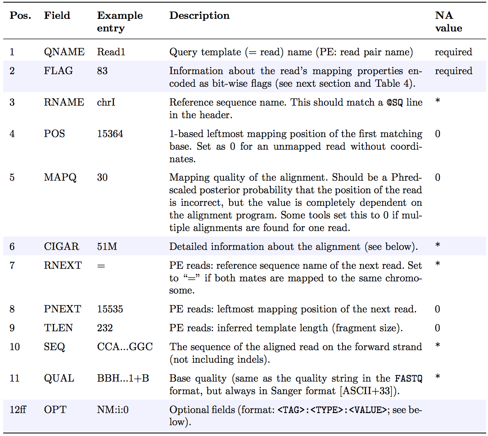
The FLAG field
The FLAG field encodes properties of a read as a sum of binary values:
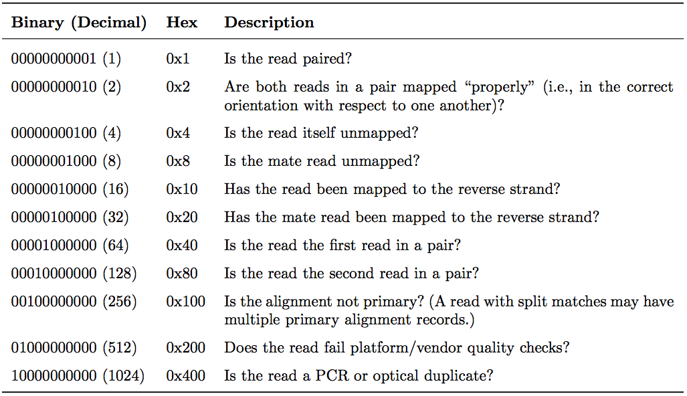
Common FLAG values for single-end reads:
- 0: mapped to forward strand
- 4: unmapped
- 16: mapped to reverse strand
Common FLAG values for paired-end reads:
- 83 (1+2+16+64): paired, proper pair, first in pair, reverse strand
- 99 (1+2+32+64): paired, proper pair, first in pair, mate on reverse strand
- 147 (1+2+16+128): paired, proper pair, second in pair, reverse strand
- 163 (1+2+32+128): paired, proper pair, second in pair, mate on reverse strand
The CIGAR string
CIGAR (Concise Idiosyncratic Gapped Alignment Report) describes operations needed to align a read to the reference:
- M – alignment match (can be match or mismatch)
- I – insertion in read relative to reference
- D – deletion in read relative to reference
- N – skipped region (e.g., intron in RNA-seq)
- S – soft clipping (clipped bases present in read)
- H – hard clipping (clipped bases absent from record)
- = – sequence match (not widely used)
- X – sequence mismatch (not widely used)
The sum of M, I, S, =, X operations equals the read length.
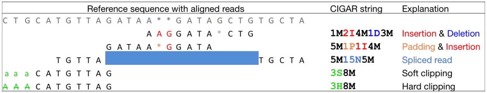
Read groups
SAM/BAM format supports labeling reads with read group tags, allowing results from multiple experiments to be pooled in a single BAM file. Downstream tools like variant callers recognize read groups and output results per group.
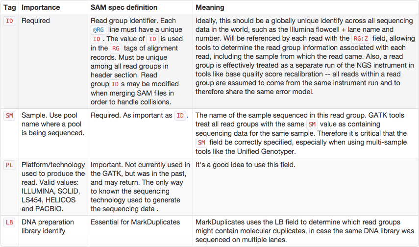
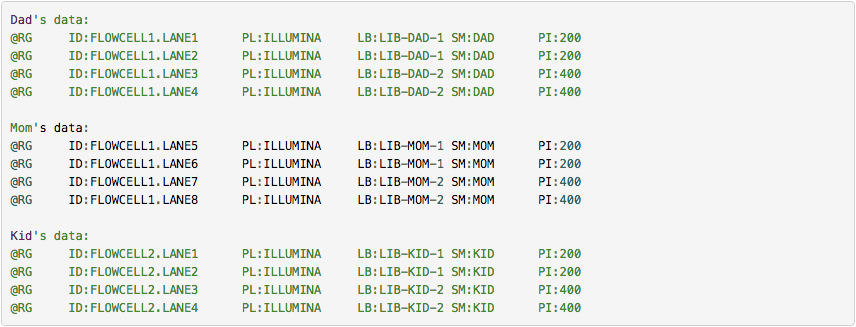
SAM/BAM processing toolkits
- DeepTools – visualization, QC, normalization
- SAMtools – sorting, merging, indexing, pileup
- BEDtools – interval-based analysis
- Picard – HTS data manipulation
7. Remove Duplicates
7.1 What are read duplicates?
PCR amplification during library preparation introduces biases [3]. Some fragments are amplified more than others, producing PCR duplicates—reads with identical alignment coordinates that originate from the same template molecule rather than independent sampling. On patterned flow cells (NovaSeq, NextSeq 2000), optical duplicates are a distinct artifact: clusters appear as duplicates due to physical proximity rather than PCR amplification. MarkDuplicates detects these using the OPTICAL_DUPLICATE_PIXEL_DISTANCE parameter.
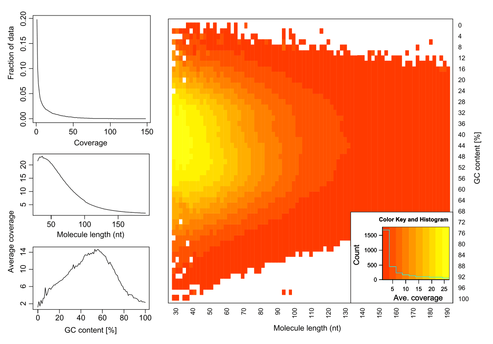
Duplicates can be identified by outer alignment coordinates or sequence-based clustering. MarkDuplicates from the Picard package is the standard tool.
When sequencing targets are small (bacterial, viral, or organellar genomes, amplicons), reads can share coordinates by chance rather than PCR duplication. Aggressive duplicate removal in these cases removes real signal. The balance depends on coverage, insert size variance, and allele frequencies [4].
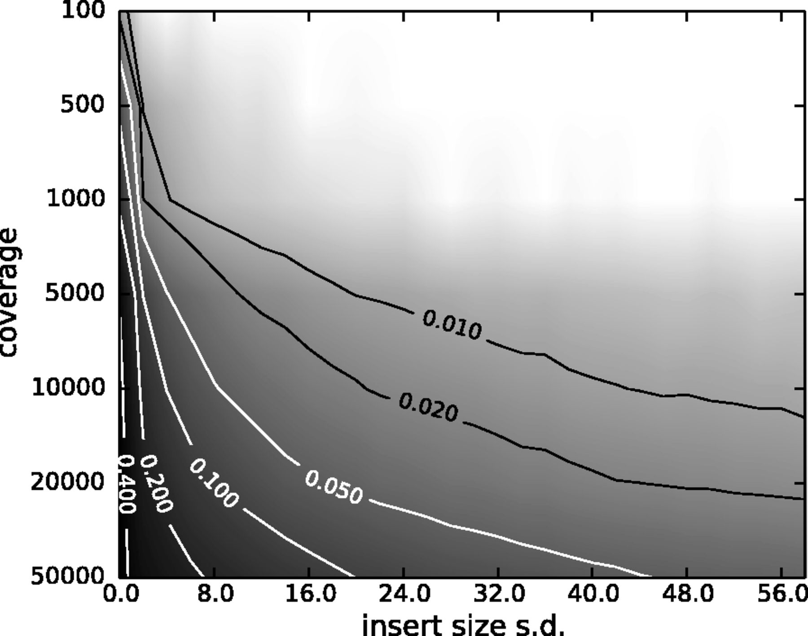
7.2 Run MarkDuplicates
Remove duplicates
Run MarkDuplicates with:
- Select SAM/BAM dataset or dataset collection: BAM output from
BWA-MEM2 - If true do not write duplicates to the output file instead of writing them with appropriate flags set:
Yes
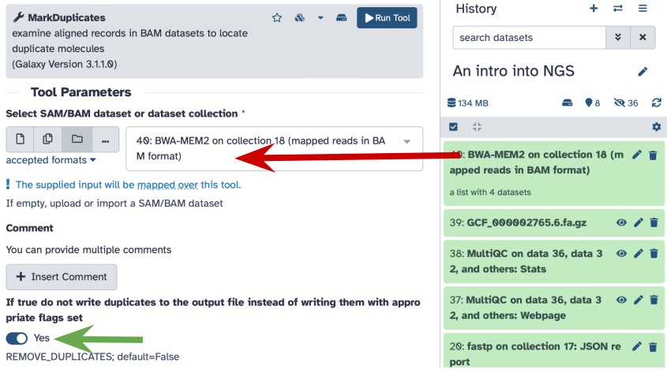
8. Calling Variants
We use LoFreq for variant calling. Our samples are from human blood, where Plasmodium parasites exist in a haploid state (only the zygote is diploid, and that stage occurs in the mosquito). LoFreq is specifically designed for calling variants in haploid and mixed-population scenarios—exactly what we covered in Lecture 19.
8.1 Realign reads around indels
As we discussed in Lecture 19, indels in repetitive regions can be aligned in multiple valid ways, each producing a different variant call. Left-aligning indels guarantees consistency across samples and callers.
Realign reads around indels
Run Realign reads (LoFreq Viterbi) with:
- Reads to realign: output of
MarkDuplicates - Choose the source for the reference genome:
History - Reference: the uploaded P. falciparum genome

8.2 Call variants
Call variants with LoFreq
Run Call variants (LoFreq) with:
- Input reads in BAM format: output of the realignment step
- Choose the source for the reference genome:
History - Reference: the uploaded reference genome
- Types of variants to call:
SNVs and indels - Variant calling parameters:
Configure settings- Minimal coverage:
10 - Minimum baseQ:
20 - Minimum baseQ for alternate bases:
20 - Minimum mapping quality:
20
- Minimal coverage:
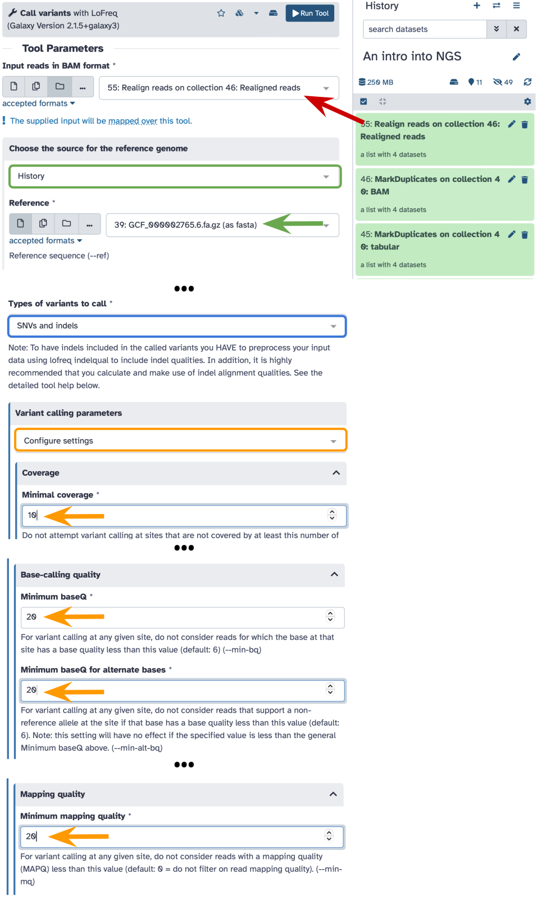
The output is a collection of VCF files containing all variants found between reads and the reference genome.
9. Annotating Variants
9.1 Build a SnpEff database
To annotate variants with their predicted effects, we first need a SnpEff database built from the reference genome and gene annotations.
Upload gene annotations
Paste the following URL into the Upload tool and set datatype to gtf.gz:
https://zenodo.org/records/15354240/files/GCF_000002765.6_GCA_000002765.ncbiRefSeq.gtf.gz
Build SnpEff database
Run SnpEff Build with:
- Name for the database:
Pf - Input annotations are in:
GTF - GTF dataset to build database from: the uploaded GTF file
- Choose the source for the reference genome:
History - Genome in FASTA format: the reference genome
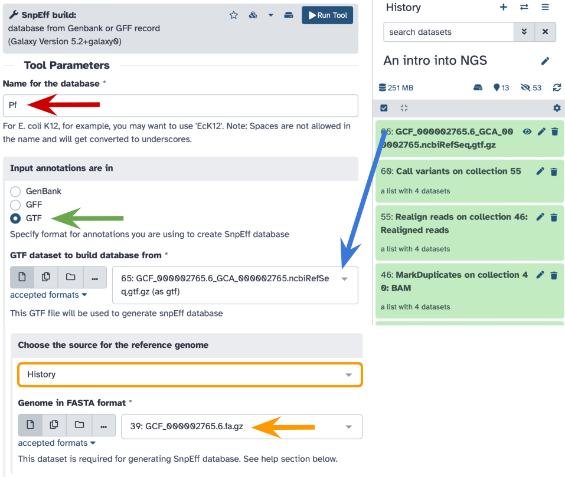
9.2 Annotate variant effects
Run SnpEff eff
Run SnpEff eff with:
- Sequence changes (SNPs, MNPs, InDels): VCF output from LoFreq
- Genome source:
Custom snpEff database in your history - SnpEff Genome Data: the database built in the previous step
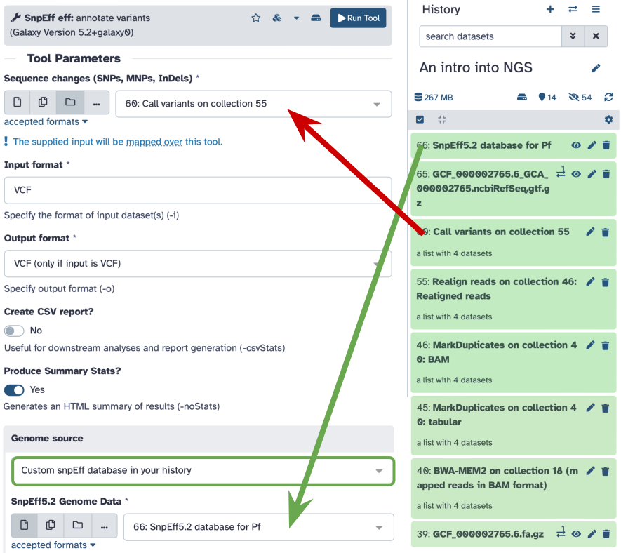
9.3 Extract variant fields with SnpSift
The annotated VCF files can be viewed in a genome browser, but converting them to tab-delimited tables is more practical for analysis.
Extract fields with SnpSift
Run SnpSift Extract Fields with:
- Variant input file in VCF format: output of SnpEff eff
- Fields to extract:
CHROM POS REF ALT QUAL DP AF SB DP4 ANN[*].EFFECT ANN[*].IMPACT ANN[*].GENE ANN[*].AA_POS ANN[*].HGVS_C ANN[*].HGVS_P- One effect per line:
Yes

The extracted fields:
| # | Field | Meaning |
|---|---|---|
| 1 | CHROM |
Chromosome name |
| 2 | POS |
Position on chromosome |
| 3 | REF |
Reference allele |
| 4 | ALT |
Alternative allele (observed in reads) |
| 5 | QUAL |
Variant quality (from LoFreq) |
| 6 | DP |
Read depth at this position |
| 7 | AF |
Alternative allele frequency |
| 8 | SB |
Strand bias P-value (Fisher’s exact test) |
| 9 | DP4 |
Depths: Fwd Ref, Rev Ref, Fwd Alt, Rev Alt |
| 10 | ANN[*].EFFECT |
Predicted effect on protein |
| 11 | ANN[*].IMPACT |
Expected phenotype impact |
| 12 | ANN[*].GENE |
Gene containing the variant |
| 13 | ANN[*].AA_POS |
Amino acid position affected |
| 14 | ANN[*].HGVS_C |
Nucleotide change (CDS coordinates) |
| 15 | ANN[*].HGVS_P |
Amino acid change (protein coordinates) |
9.4 Collapse collection into a single dataset
The extracted fields still exist as a collection (one file per sample). To perform secondary analysis we collapse the collection into a single dataset. Collapsing concatenates all elements and prepends sample IDs so each line is traceable to its source.
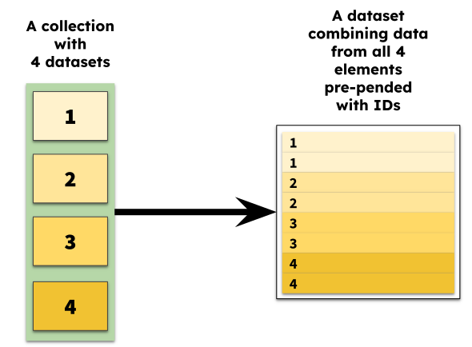
Collapse the collection
Run Collapse Collection with:
- Collection of files to collapse: output of SnpSift Extract Fields
- Keep one header line:
Yes - Prepend File name:
Yes - Where to add dataset name:
Same line and each line in dataset

Example input (a collection with two elements, 15 columns each):
Element ERR042228.fq:
NC_004318.2 676399 C T 1344.0 45 0.977778 0 0,0,23,22 missense_variant MODERATE PF3D7_0415200 914 c.2740G>A p.Glu914Lys
NC_004318.2 676631 C T 2000.0 60 0.966667 0 0,0,32,27 synonymous_variant LOW PF3D7_0415200 836 c.2508G>A p.Lys836LysElement ERR042232.fq:
NC_004318.2 671152 G A 1324.0 42 0.952381 0 0,1,20,21 synonymous_variant LOW PF3D7_0415100 90 c.270G>A p.Gln90Gln
NC_004318.2 671641 A T 1300.0 43 0.906977 0 0,0,16,27 missense_variant MODERATE PF3D7_0415100 253 c.759A>T p.Glu253AspOutput (single dataset, 16 columns—sample ID prepended):
ERR042228.fq NC_004318.2 676399 C T 1344.0 45 0.977778 0 0,0,23,22 missense_variant MODERATE PF3D7_0415200 914 c.2740G>A p.Glu914Lys
ERR042228.fq NC_004318.2 676631 C T 2000.0 60 0.966667 0 0,0,32,27 synonymous_variant LOW PF3D7_0415200 836 c.2508G>A p.Lys836Lys
ERR042232.fq NC_004318.2 671152 G A 1324.0 42 0.952381 0 0,1,20,21 synonymous_variant LOW PF3D7_0415100 90 c.270G>A p.Gln90Gln
ERR042232.fq NC_004318.2 671641 A T 1300.0 43 0.906977 0 0,0,16,27 missense_variant MODERATE PF3D7_0415100 253 c.759A>T p.Glu253Asp10. Anything Interesting?
Cowman et al. [1] showed that P. falciparum strains with an amino acid change at residue 108 of the dhfr gene have increased resistance to pyrimethamine. In the P. falciparum 3D7 reference, this gene is PF3D7_0417200.
Filter for variants in the gene of interest
Run Filter with:
- Filter: output of Collapse Collection
- With following condition:
c13=='PF3D7_0417200' - Number of header lines to skip:
1
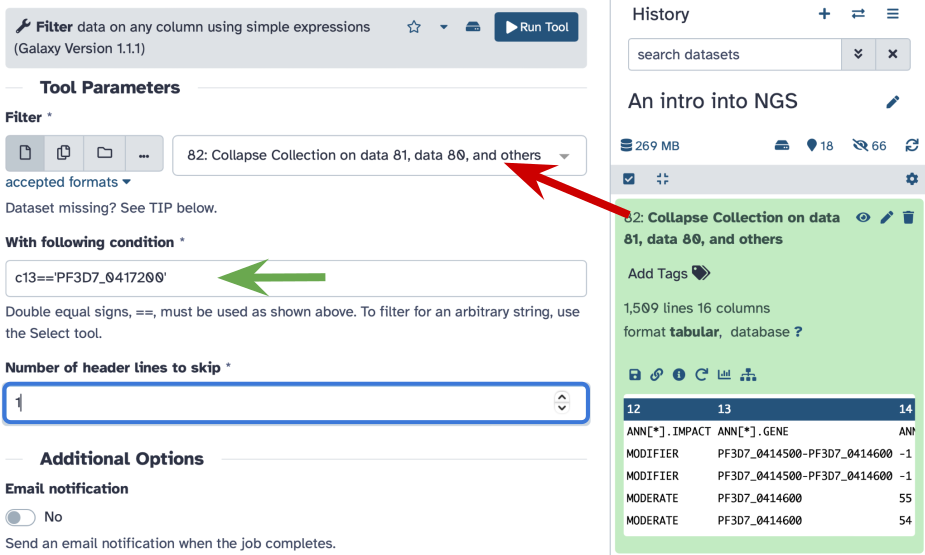
Results
| Sample | CHROM | POS | REF | ALT | QUAL | DP | AF | SB | DP4 | EFFECT | IMPACT | GENE | AA_POS | HGVS_C | HGVS_P |
|---|---|---|---|---|---|---|---|---|---|---|---|---|---|---|---|
| ERR042228.fq | NC_004318.2 | 748410 | G | A | 2335 | 70 | 0.957 | 0 | 0,0,30,40 | missense_variant | MODERATE | PF3D7_0417200 | 108 | c.323G>A | p.Ser108Asn |
| ERR636028.fq | NC_004318.2 | 748239 | A | T | 6941 | 194 | 0.985 | 0 | 0,0,117,77 | missense_variant | MODERATE | PF3D7_0417200 | 51 | c.152A>T | p.Asn51Ile |
| ERR636028.fq | NC_004318.2 | 748262 | T | C | 7627 | 211 | 0.981 | 0 | 0,0,117,93 | missense_variant | MODERATE | PF3D7_0417200 | 59 | c.175T>C | p.Cys59Arg |
| ERR636028.fq | NC_004318.2 | 748410 | G | A | 8292 | 233 | 0.991 | 0 | 0,0,112,121 | missense_variant | MODERATE | PF3D7_0417200 | 108 | c.323G>A | p.Ser108Asn |
| ERR636434.fq | NC_004318.2 | 748262 | T | C | 67 | 214 | 0.019 | 0 | 113,97,2,2 | missense_variant | MODERATE | PF3D7_0417200 | 59 | c.175T>C | p.Cys59Arg |
While three samples contain mutations in the dhfr gene (PF3D7_0417200), only two—ERR042228 and ERR636028—have amino acid replacements at position 108 (Serine to Asparagine, p.Ser108Asn). These two individuals are likely infected with pyrimethamine-resistant P. falciparum.
Note that ERR636434 has a variant at position 59 but at very low frequency (AF = 0.019), suggesting it may be a minor subpopulation or sequencing artifact.
Summary
- FASTQ Sanger is the standard sequencing data format; Galaxy uses it exclusively for downstream processing
- Paired-end data can be provided as two files or interleaved; Galaxy collections organize these logically
fastphandles adapter removal and quality filtering;MultiQCaggregates QC reports across samplesBWA-MEM2is a fast, reliable mapper; when the genome index is unavailable, upload the reference and build it on the fly- SAM/BAM is the standard aligned-read format; key toolkits include SAMtools, Picard, DeepTools, and BEDtools
- Duplicate removal is critical for variant calling but must be used cautiously on small genomes
- LoFreq is designed for variant calling in haploid and mixed-population scenarios
- SnpEff/SnpSift annotate variants with predicted effects and extract structured tables
- Collections enable batch processing of many samples through the same pipeline
- Large-scale pathogen surveillance follows exactly this workflow: sequence, map, call variants, annotate, interpret
11. Why MRSA?
The variant-calling workflow we just completed on Plasmodium data is directly applicable to bacterial pathogens. In upcoming lectures we apply it to methicillin-resistant Staphylococcus aureus (MRSA)—one of the most clinically important drug-resistant organisms worldwide [5].
S. aureus as commensal and pathogen
Staphylococcus aureus colonizes the nares of 28–32% of the US population and is both a frequent commensal and a leading cause of bacteraemia, endocarditis, skin and soft tissue infections, and osteomyelitis. Any item in contact with skin can serve as a fomite—from white coats and ties to phones and mobile telephones—and colonization can persist for months within the home environment.
Methicillin resistance
Penicillin resistance arose in the 1940s, mediated by the beta-lactamase gene blaZ. The first semi-synthetic anti-staphylococcal penicillins were developed around 1960, and MRSA was observed within one year of their clinical use. Methicillin resistance is mediated by mecA, carried on the staphylococcal cassette chromosome mec (SCCmec). mecA encodes penicillin-binding protein 2a (PBP2a), which has low affinity for beta-lactams, conferring resistance to this entire class of antibiotics.
Genome structure
The S. aureus genome is approximately 2.8 Mb. The core genome (~75%) contains essential genes for metabolism and replication and is highly conserved across strains. The accessory genome (~25%) consists of mobile genetic elements (MGEs)—pathogenicity islands, bacteriophages, chromosomal cassettes, transposons, and plasmids—which are acquired through horizontal transfer. Mediators of virulence, immune evasion, and antibiotic resistance are commonly found in the accessory genome, making it more variable and often more strain-specific than the core.
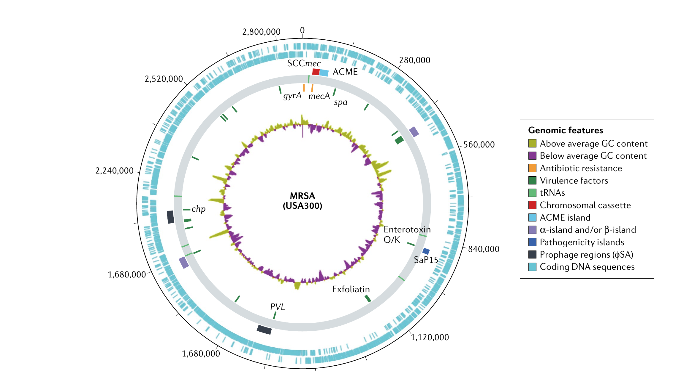
Clonal complexes and global epidemiology
Over 90% of known S. aureus genomes fall into just four predominant clonal complexes (CCs): CC5, CC8, CC398, and CC30. The molecular epidemiology of MRSA is characterized by serial emergence of regionally dominant clones:
- USA300 (CC8, SCCmec IV) — the most prominent CA-MRSA strain in North America, carrying ACME and PVL
- EMRSA-15 (ST22, CC22) and EMRSA-16 (ST36, CC30) — dominant HA-MRSA strains in the United Kingdom and Europe
- ST239 (CC8) — a globally distributed HA-MRSA lineage, especially in Asia and South America
- ST398 (CC398) — livestock-associated MRSA found in Europe, Asia, and the Americas
Healthcare-associated MRSA (HA-MRSA) and community-associated MRSA (CA-MRSA) were historically distinguished by SCCmec type (I–III vs IV–V), clinical setting, and resistance profiles. CA-MRSA strains tend to be more susceptible to non-beta-lactam antibiotics and sometimes produce Panton–Valentine leukocidin (PVL). However, this distinction is blurring as genotypes invade each other’s niches—CA-MRSA has replaced HA-MRSA in many hospitals.
Why whole genome sequencing matters
Traditional typing methods—pulsed-field gel electrophoresis (PFGE), multilocus sequence typing (MLST), spa typing—have limited resolution. Whole genome sequencing is “precise and highly discriminatory,” enabling reconstruction of transmission chains within healthcare systems and communities, outbreak tracking, and evolutionary analysis at single-nucleotide resolution. WGS has revealed that USA300 emerged through rapid clonal expansion rather than convergent evolution, and has provided sufficient resolution to determine household clustering and hospital introduction events.
What’s Next
Next Tuesday (Mar 31): We step back from variant calling to learn interval operations—the fundamental algebra for manipulating genomic coordinates. Every analysis we have done so far (mapping, variant calling, annotation) produces data tied to genomic positions. BEDTools provides a systematic way to combine, compare, and filter these position-based results. We will use the P. falciparum variant data from today as input.
Following lectures: We apply the variant-calling workflow to S. aureus MRSA data from Kaku et al. [6]—a nationwide surveillance of 270 MRSA bloodstream infection isolates from 45 Japanese hospitals. We then transition to genome assembly using the extended dataset from Hisatsune et al. [7], who performed de novo assembly of 580 BSI-derived S. aureus isolates to characterize the evolutionary trajectory of high-risk clones.
References
- Cowman, A.F. et al. (1988). Amino acid changes linked to pyrimethamine resistance in the dihydrofolate reductase-thymidylate synthase gene of Plasmodium falciparum. PNAS, 85(23), 9109-9113.
- Cock, P.J. et al. (2010). The Sanger FASTQ file format for sequences with quality scores, and the Solexa/Illumina FASTQ variants. Nucleic Acids Research, 38(6), 1767-1771.
- Kanagawa, T. (2003). Bias and artifacts in multitemplate polymerase chain reactions (PCR). Journal of Bioscience and Bioengineering, 96(4), 317-323.
- Zhou, W. et al. (2014). Bias from removing read duplicates in ultra-deep sequencing experiments. Bioinformatics, 30(8), 1073-1080.
- Turner, N.A. et al. (2019). Methicillin-resistant Staphylococcus aureus: an overview of basic and clinical research. Nature Reviews Microbiology, 17, 203-218.
- Kaku, N. et al. (2022). Changing molecular epidemiology and characteristics of MRSA isolated from bloodstream infections: nationwide surveillance in Japan in 2019. Journal of Antimicrobial Chemotherapy, 77(8), 2130-2141.
- Hisatsune, J. et al. (2025). Staphylococcus aureus ST764-SCCmecII high-risk clone in bloodstream infections revealed through national genomic surveillance integrating clinical data. Nature Communications, 16, 2698.